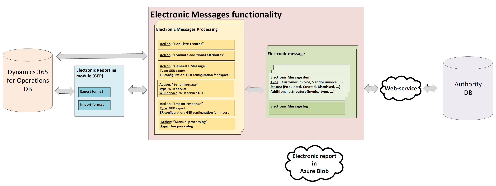

Electronic messaging
This topic provides overview and the setup information for the Electronic messages (EM) functionality.
Recently, the governments and legislative authorities of various countries and regions around the world have implemented reporting requirements for companies that are registered in those countries or regions. The purpose of the requirements is to enable data to be obtained from those companies in electronic format, directly from the systems where it was accounted, stored, and processed.
The EM functionality in Microsoft Dynamics 365 Finance supports various processes for electronic interoperation between Finance and the systems that governments and legislative authorities offer for reporting, submitting, and receiving official information.
The EM functionality is integrated with the Electronic Reporting (ER) module. You can set up ER formats for electronic messages. For more information, see Electronic reporting (ER).
Basic concepts for EM functionality
The EM functionality is based on the following entities:
- Electronic message – A report or declaration that should be reported or transmitted internally, such as a report that is sent to a tax office.
- Electronic message items – Records that should be included in the message that is reported.
- Electronic message processing – A chain of actions that should be run to collect the required data, generate reports, store data in Azure Blob storage, transmit reports outside the system, receive responses from outside the system, and, based on the information that is received, update the database. The actions in the chain can be linked or unlinked.
The following illustration shows the flow of data for EM.

Scenarios supported by the EM functionality
The EM functionality supports the following scenarios:
- Manually create messages and generate reports that are based on associated exporting ER formats of various types. These types include Microsoft Excel, XML, JavaScript Object Notation (JSON), PDF, text, and Microsoft Word.
- Automatically create and process messages that are based on information that was requested and received from an authority by using an associated importing ER format.
- Collect and process information from a data source as message items. The data source is a Finance table.
- Store additional information, and evaluate various values by calling specifically defined executable classes in relation to messages or message items.
- Aggregate information that is collected in message items, split that information by message, and generate reports that are in associated exporting ER formats.
- Transmit the reports that are generated to a web service by using security information that is stored in the Azure key vault.
- Receive a response from a web service, interpret the response, and update data in Finance as appropriate.
- Store and review all the reports that are generated.
- Store and review all the log information that is related to actions that are run for a message or message item.
- Control the processing through various message statuses and message item statuses.
Country-specific regulatory features supported by the EM functionality
The following table provides information about some country-specific regulatory features that are supported by the EM functionality.
| Country | Feature name | Feature demo recording |
|---|---|---|
| Spain | Immediate Supply of Information on VAT (Suministro Inmediato de Información del IVA, SII) | |
| Hungary | Online invoicing system | |
| United Kingdom | Making Tax Digital (MTD) – VAT statement submission | Finance and Operations: UK Digital Tax - VAT Declaration In Dynamics 365 |
| Lithuania | i.SAF reporting | |
| Poland | VAT declaration with registers (JPK_V7M, VDEK) | Dynamics 365 Finance: SAF/JPK VAT Audit Registers |
| Netherlands | VAT declaration for Netherlands | |
| Czech Republic | VAT declaration | |
| Brazil | SPED-Reinf | |
| Russia | VAT declaration | |
| Russia | Accounting reporting in electronic format | |
| Russia | Profit tax declaration | |
| Russia | Assessed tax declaration | |
| Russia | Transport tax declaration | |
| Russia | Land tax declaration |